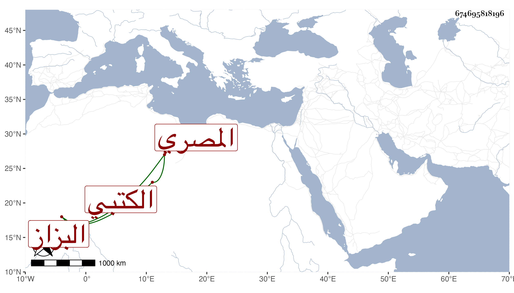

0902Sakhawi.DawLamic.ITO20230111-ara1.EIS1600.674695818196
Biography ID: 674695818196
302
محمد ين يوسف بن سليمان بن عبد الله الشمس المصري البزاز الكتبي ويعرف بالأمشاطي . ولد سنة خمسين وسبعمائة أو التي قبلها وسمع على العز بن جماعة جزء ابن الطلاية وعلى الحسين بن عبد الرحمن التكريتي جزء بيبي وعلى الجمال عبد الله الباجي في آخرين كالمجد إسماعيل الحنفي وحدث سمع منه الفضلاء كابن موسى والموفق الأبي والزين رضوان وتكسب في حانوت ببيع الكتب دهرا وعرف بالخبرة التامة فيها مع ملازمة التلاوة والصيام والعبادة وحسن السيرة . وذكره شيخنا في معجمه فقال أجاز في استدعاء ابني وذكر لي ما يدل على أنه ولد سنة الطاعون العام . ومات سنة ثلاث وثلاثين وكانت له معرفة بالكتب وهو آخر من بقي بالكتبيين ممن عاصر القدماء وتبعه المقريزي في عقوده رحمه الله .
